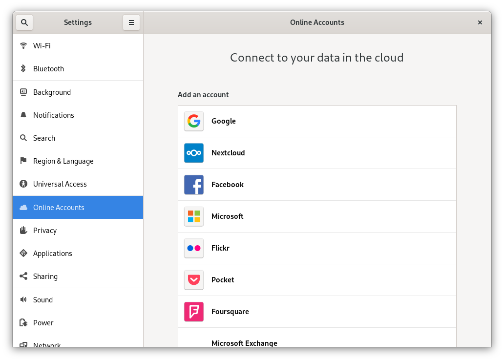
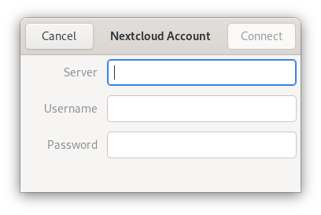
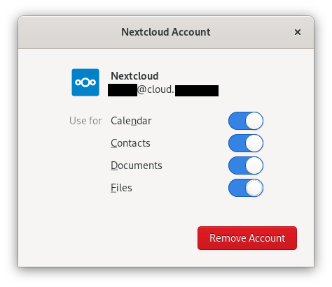

Sincronizarea cu desktop-ul GNOME
Desktopul GNOME are suport integrat pentru calendarul, contactele și sarcinile din Nextcloud, care vor fi afișate în managerul de informații personale (PIM) Evolution sau în aplicațiile Calendar, Sarcini și Contacte. Similar, Fișiere se integrează în managerul de fișiere Nautilus prin WebDAV. Aceasta din urmă funcționează doar cât timp calculatorul este conectat la internet.
Acest lucru se poate face urmând următorii pași:
În setările GNOME, deschide Conturi online.
La „Conectează un cont”, alege
Nextcloud:
Introdu URL-ul serverului, numele de utilizator și parola. Dacă ai activat autentificarea în doi pași, trebuie să generezi o parolă de aplicație (token), deoarece Conturi online GNOME nu acceptă încă autentificarea WebFlow din Nextcloud (Află mai multe):

În fereastra următoare, selectează resursele pe care GNOME le poate accesa și apasă butonul Închide pentru a închide fereastra:

Sarcinile, calendarele și contactele Nextcloud ar trebui să fie acum vizibile în PIM-ul Evolution, precum și în aplicațiile Sarcini, Contacte și Calendar.
Fișierele vor fi afișate ca resursă WebDAV în managerul de fișiere Nautilus și vor fi disponibile și în ferestrele GNOME de deschidere/salvare a fișierelor. Documentele ar trebui să fie integrate în aplicația Documente GNOME.
De asemenea, toate resursele ar trebui să poată fi căutate de oriunde, prin apăsarea tastei Windows și introducerea unui termen de căutare.